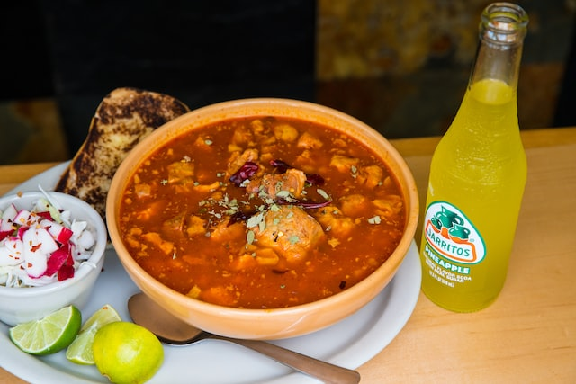

Menudo Recipe

Description
Cuisine: Mexican
Prep Time: 10 minutes
Cook Time: 2 hours
Total Time: 2 hours 10 minutes
Servings: 8 servings
Calories: 342 kcal
Author: Mely Martinez - Mexico in My Kitchen
Ingredients
For the broth:
- 3 pounds of clean tripe cut into small bite size pieces
- 1 cow's fee (it's usually sold already cut into pieces)
- 1 pound narrow bones
- 4 large garlic cloves
- 1 medium onion cut into thick slices
- 1 1/2 tesspoon salt to tase
- 2 teaspoons dry oregano
For the sauce:
- 6 guajillo pepers cleaned seeded, open flat, and deveined
- 1 teaspoon of freshly ground cumin (opitonal)
- 3 garlic gloves
For the garnishes:
-
1 Tbsp. Piquin peppers crushed to add when serving if you like hot food
- Lemons cut into wedges
- Dry Mexican oregano
- 3/4 cup white onion chopped
- To be eaten with warm corn tortillas
Instructions
-
simmer the cow feet and marrow bones in a large pot with 6 quarts of
water, 5 garlic cloves and an onion for about 15 minutes at medium heat
without covering. During this time, skim off the foam that forms. Add
the tipe and oregano and cook for about 2-2 1/2 hours approximately
until tripe is tender but firm ( make sure you do not overcook).For the
INSTANT POT, cook for 30 minutes, for a Pressure cooker 45 minutes. You
could also use a slow cooker and set it on low for 6 hrs.
-
Remove the cow feet and marrow bones from the pot. Skim the fat that
forms on top of the broth. Once the Cow foot cools a litte, remove the
bones and chop the meaty parts off to be returned to the pot.
-
While the meat is cooking, prepare the guajillo sauce. Toas the Guajillo
peppers in a griddle over medium heat. Press them down with a spatula
slightly toasting them without burnign them.
-
Place the roasted peppers ina bown and cover with water. Let them soak
for about 25 minutes until soft. After taht, drain the peppers and place
them in your blender with the rest of the garlic, 1.2 cup of the broth,
and cumin if using. Blent until very smooth. Straing the sauce using a
sieve and pour into the pot. Simmer the broth for another 30 minutes,
partially covered. Taste to season with more salt if needed.
-
Serve the soup in large bowls and place the garnishes in a dish in order
for everyone to add to their liking. Do not forget warm corn tortillas
to soak in the broth.
Note:
Some people add Hominy to the soup. If you can buy Hominy in a can, drain
it and add it to the soup in the final simmering.